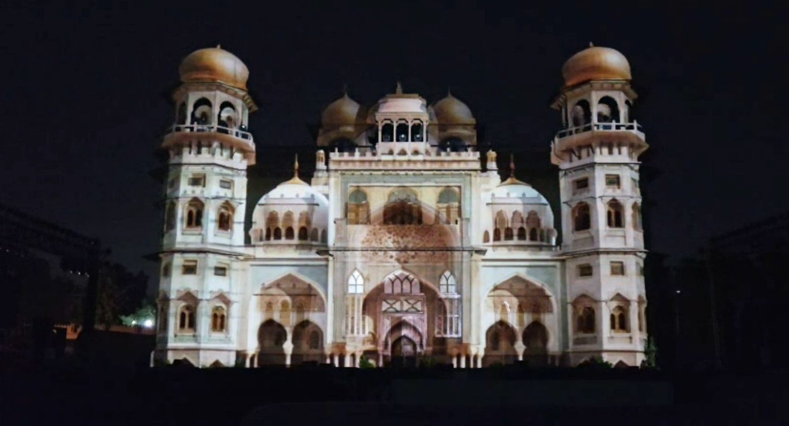

Permanent projection mapping installations: a maintenance guide
How a permanent projection mapping installation differs from a one-off show: hardware, automation, alignment drift, content and a maintenance checklist.

A one-night projection mapping show is a sprint. Everything is brought in, aligned, run and packed away within days. A permanent installation is a different job: the projectors stay on the building, run every evening, and have to keep looking right for years without a studio crew standing beside them. Clients often ask us for a "permanent version" of a festival show and assume it is the same work spread over a longer time. It is not. This note covers what changes when a mapping installation is meant to stay, and what we raise before agreeing to build one.
What a permanent installation changes
For a temporary show we can accept compromises that would be unacceptable for years of daily use. Projectors sit on scaffold or truss, cables run along the ground under covers, and a technician is nearby the whole time. In a permanent installation, hardware lives in weatherproof enclosures or on fixed mounts, cables are routed through conduit, and the system must start itself, run its schedule and recover from a power cut without anyone touching it.
The owner's role changes too. A show client buys an event. An installation client buys a system, and becomes responsible for it afterwards. That is why the conversation has to cover who looks after it, who pays for lamps or laser modules and cleaning, and who is called when something drifts. If those answers are vague at the start, the installation tends to degrade quietly until it is switched off.
Hardware built for long hours
Daily operation puts more hours on equipment than a handful of events ever do. Light source choice matters more here, and our note on laser or lamp projectors explains why laser sources are usually the practical option for installations: they avoid frequent lamp changes and hold their brightness more steadily, though they still dim slowly with age and the exact rated life depends on the model and how hard it is driven.
Beyond the projector itself, we look at:
- Enclosures with filtered airflow or sealed cooling, so dust, insects and humidity do not reach the optics.
- Mounts that are fixed to the structure with an engineer's agreement, rather than clamped to temporary scaffold. Our guide to rigging and mounting projectors covers the loads and checks that carry over.
- Power that is protected and clean, with a way to restart equipment in a sensible order after an outage. See power and signal cabling for the planning side.
- A media player or server chosen for unattended running rather than live operation, as discussed in choosing a media server.
Access matters as much as the equipment. If a projector sits on a roof that needs a lift and a permit to reach, every small fix becomes a big one. We try to place equipment where a trained person can reach it safely and quickly.
Automation, schedule and remote monitoring
A permanent system should run itself. That means a daily schedule that switches projectors on, starts playback at a set time, and shuts down afterwards, ideally tied to sunset so the schedule follows the seasons. It also means a manual override for the building's own staff, with a very simple control, because the person who uses it will not be a projection specialist.
Remote monitoring is worth planning from the start. Most professional projectors and media players can report status over a network, such as whether they are on, their temperature and warnings. A basic dashboard or alert to a named person lets a fault be noticed the same evening rather than weeks later, when a passer-by finally mentions that one corner looks dark. Network access to such equipment needs proper security, so the installation should sit on its own protected network and not on an open one.
Content that lasts, and content that changes
A single show is built to be seen once or twice. An installation is seen by the same neighbours and staff night after night, and content that felt exciting on the first evening can feel tired by the third week. We usually recommend building a library of shorter pieces that rotate, plus room for seasonal or occasion content such as national days, festivals and campaigns. Our notes on designing content for building facades and colour and contrast still apply, with an added concern for everyday viewing: calmer pacing, fewer harsh flashes, and nothing that irritates people who live or work nearby. The comfort principles in our flicker and strobe safety note matter even more when the audience cannot choose to leave.
Plan how new content will be added. If every update needs the original studio to attend in person, costs rise and updates stop happening. A clear process for delivering and approving files, similar to the one in our guide to content delivery and version control, keeps the library fresh.
Alignment drift and recalibration
Over time, small movements add up. Buildings expand and contract with temperature, mounts settle, vibration loosens fixings, and a projector replaced after a fault never lands in exactly the same position. A picture that was sharp on opening night can slowly slide off the edges of a window or cornice. The method we use to fit the image to the building, described in aligning and warping projection mapping, is also what lets us correct that drift later.
To make recalibration easy, we record the alignment settings, keep reference photographs taken from the intended viewing position, and mark key points on the building and the mounts. Where the budget allows, camera-based alignment can speed up the correction, but even without it a documented process lets a trained technician restore the picture in a short visit. Whatever the method, schedule a periodic check instead of waiting for someone to complain.
A maintenance plan to agree up front
Maintenance is not an extra to be discussed after the build. It decides whether the installation still looks good in year three. We suggest agreeing the following in writing before work begins:
| Item | What to agree |
|---|---|
| Routine inspection | How often someone checks enclosures, filters, mounts and cables, and who does it |
| Cleaning | Lens, glass and filter cleaning, and the dust or pollen conditions on site |
| Alignment check | Regular review against reference photographs, and the process for recalibration |
| Spare parts | Which items are kept on site, such as a spare projector or player |
| Monitoring and alerts | Who receives a fault notice and how fast they must respond |
| Content updates | How new files are delivered, approved and loaded |
| Warranty and support | Manufacturer cover, support contacts and the owner's own responsibilities |
| End of life | What happens when equipment is replaced, and who holds the settings and source files |
It also helps to keep a simple logbook of faults, repairs and settings changes. Patterns show up quickly in a log, such as a projector that overheats every summer afternoon, and they make the next service visit faster.
Approvals, neighbours and operating hours
A single event can often be approved as a special occasion. A nightly installation is closer to permanent signage or lighting, and the approvals can be different and more demanding. Building owners, heritage authorities and local bodies may all have a view on fixings, light levels and hours of operation. Our guide to permissions for public projection mapping shows is the starting point, and for historic sites the points in projection mapping on heritage buildings apply: nothing should be fixed to a protected structure without agreement. Neighbours deserve thought as well. Set sensible operating hours, keep brightness appropriate to the surroundings, and avoid sound spilling into residential areas.
Talking to a studio about a permanent installation
At AKS we have delivered large temporary shows at sites such as Parliament House in Islamabad, Mohatta Palace in Karachi and Rohtas Fort, and the discipline from that work, surveying carefully, documenting everything and planning for what can fail, is exactly what a permanent system needs. If you are considering a lasting installation on a building, tell us about the site, how often you want it to run and who will look after it, using the contact section, and we will help you judge whether a permanent system, a recurring seasonal show or an LED solution fits better.
Considering a permanent installation?
Tell AKS Creative Studio about the building, the operating hours and who will maintain it, and we will advise on the right approach.
Start a conversation ↗